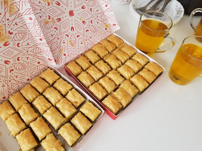

Activities
The gather together event
Offerfeest is mainly known as a Muslim party, but you don't have to be Muslim to attend this party. It's for everyone! And this day has been marked as a day of being together, being united and having a good time with you dearest and nearest. Do you like to know more about the Islam or just want to attend this party with a Muslim friend, you're absolutely welcome.
During this event there will be lots of delicious food and cookies, and lots of people to get to know.
€ 2,
10 August
from 13:00 - 19:00
Address: Weesperzijde 76, 1091 EJ Amsterdam
From Central station, you can travel with metro 54 to the stop Wibautstraat. From there, it will be a three minute walk to the Weesperzijde.